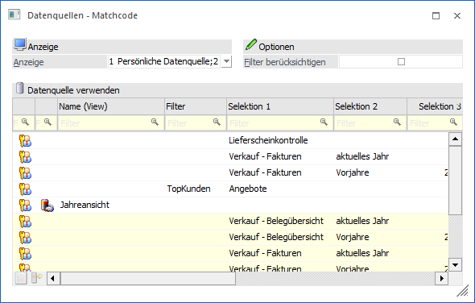
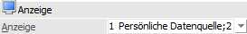
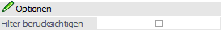
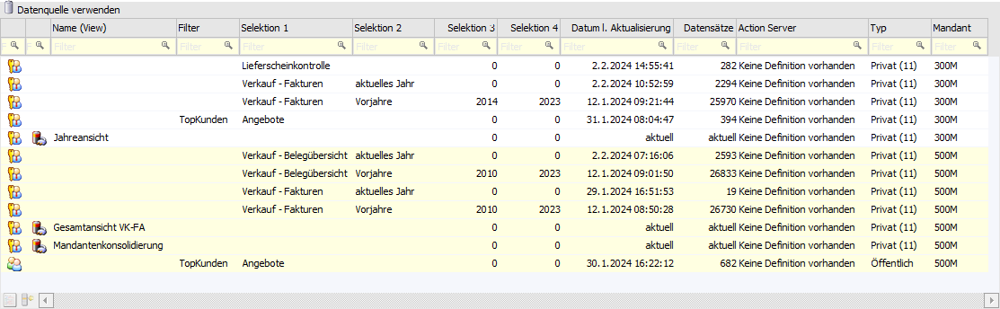
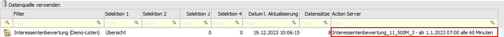
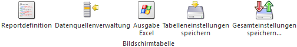
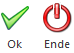

Wenn eine Datenquelle ausgewählt, erstellt oder aktualisiert werden soll, dann öffnet sich das Programm "Datenquellen - Matchcode". An dieser Stelle kann gezielt nach Datenquellen des Ausgangsobjekts gesucht und / oder neue Einträge erzeugt werden.
Hinweis
Weitere Informationen zum Thema "Datenquellen" finden Sie im Kapitel Die Datenquelle.

Anzeige

Ø Anzeige
Mit Hilfe der hier zur Verfügung stehenden Mehrfachauswahl kann definiert werden, welche Datenquellen (Snapshots, Views und MasterViews) des Ausgangsobjekts dargestellt werden sollen (Speicherung erfolgt benutzerspezifisch).
ü 1 - Persönliche
Datenquelle
Durch Aktivierung dieser Option werden in der Tabelle die
persönlichen Datenquellen angezeigt.
ü 2 - Öffentliche
Datenquelle
Durch Aktivierung dieser Option werden in der Tabelle die
öffentlichen Datenquellen angezeigt.
ü 3 - Weitere Mandanten
Durch
Aktivierung dieser Option werden in der Tabelle auch die Datenquellen von
anderen Mandanten angezeigt. Zur besseren Kennzeichnung werden jene Einträge
farblich unterlegt.
Hinweis - Datenquelle verwenden
Die Anzeige von Datenquellen ist immer abhängig von den Rechten eines Benutzers (Mandantenberechtigung, Applikationsberechtigung, Objektberechtigung auf die WinLine LIST-Liste / den Enterprise Cube). D.h. wenn der Benutzer z.B. keine Berechtigungen für den Mandanten "300M" besitzt, so werden auch keine Datenquellen aus diesem Mandanten angezeigt.
Hinweis - Datenquelle erstellen/aktualisieren
Folgende Punkte sind beim Erstellen bzw. Aktualisieren zu beachten:
ü Erstellung von Views
Nur
Volladministratoren oder Benutzer mit dem Teiladministrationsrecht
"Datenadministration" dürfen Datenquellen des Typs "View" erstellen.
ü Anzeige von MasterViews
Eine
Aktualisierung der MasterView im klassischen Sinne gibt es nicht, da es sich
"nur" um eine Sicht auf bereits bestehende Datenquellen handelt. Aus diesem
Grund werden MasterViews bei einer Erstellung bzw. Aktualisierung nicht
angeboten.
ü Öffentliche
Datenquellen
Öffentliche Datenquellen können nur aktualisiert werden, wenn
eine Objektberechtigung größer "lesen" auf das Ausgangsobjekt (WinLine
LIST-Liste, Enterprise Cube) vorhanden ist. Handelt es sich um eine Datenquelle
ohne Objektberechtigungen (z.B. Backlog), so kann die Aktualisierung nur von
einem Volladministrator oder einem Benutzer mit dem Teiladministrationsrecht
"Datenadministration" durchgeführt werden. Für alle anderen Benutzer ist in
solch einem Fall die Auswahl "Anzeige" gesperrt und mit "1 - Persönliche
Datenquelle" vorbelegt.
ü Mandant
Datenquellen immer nur
im Ursprungsmandanten aktualisiert werden.
Optionen

Ø Filter berücksichtigen
An dieser Stelle kann definiert werden, ob der Filter des Ausgangsobjekts (z.B. der WinLine LIST-Liste) für die Anzeige der Datenquellen berücksichtigt werden soll oder nicht (Speicherung erfolgt benutzerspezifisch).
Hinweis
Diese Option steht nicht zur Verfügung, wenn eine Datenquelle erstellt bzw. aktualisiert werden soll. In solch einem Fall wird immer mit dem Filter des Ausgangsobjekts gearbeitet. Des Weiteren wird die Option nicht angeboten, wenn es sich um Datenquellen aus dem Bereich "Enterprise Cube" handelt.
Tabelle "Datenquelle verwenden" / "Datenquelle erstellen/aktualisieren"

In der Tabelle werden automatisch die gefundenen Datenquellen angezeigt. Der Inhalt und die weiteren Möglichkeiten sind dabei abhängig von der zuvor gewählten Aktion ("Datenquelle verwenden" oder "Datenquelle erstellen/aktualisieren"), wobei der aktuelle Modus mit Hilfe der Überschriftszeile dargestellt wird.
ü Datenquelle verwenden
Es kann
per Doppelklick, Enter-Taste oder F5-Taste die gewünschte Datenquelle an das
Ausgangsfenster übergeben werden. Mit dieser werden dann die Daten
aufbereitet.
ü Datenquelle
erstellen/aktualisieren
Es kann eine vorhandene Datenquelle zur
Aktualisierung ausgewählt werden. Zusätzlich besteht die Möglichkeit einen neuen
Eintrag zu erstellen. In der weiteren Folge wird der Snapshot bzw. die View
erstellt / aktualisiert und die Ausgabe aufbereitet.
Innerhalb der Tabelle stehen folgende Spalten zur Verfügung:
Ø Privat / Öffentlich
Hier wird der Typ der Zeile mit Hilfe eines Icons dargestellt.
ü  - Privat
- Privat
Es handelt sich um eine private
Datenquelle.
ü  - Öffentlich
- Öffentlich
Es handelt sich um eine
öffentliche Datenquelle.
ü - Neu
Es handelt sich um eine neue
Datenquelle, welche im Zuge einer Erstellung / Aktualisierung gebildet werden
soll. Neue Datenquellen werden immer als "privat" gekennzeichnet.
Ø Typ (View)
Handelt es sich bei der Datenquelle um eine View oder MasterView, so wird auf dieses per Icon hingewiesen. Bei einer Neuanlage kann an dieser Stelle mittels Checkbox entschieden werden, ob eine View oder ein Snapshot erzeugt werden soll.
ü - Neue View
Abhängig von der aktuellen
Auswertung (siehe auch Die Datenquelle
- Typen) können Voll- und Datenadministratoren mit Hilfe der Checkbox
entscheiden, ob eine View oder ein Snapshot erstellt werden soll.
ü  - View
- View
Bei der Datenquelle handelt es sich
um eine View.
ü  - MasterView
- MasterView
Bei der Datenquelle handelt
es sich um eine MasterView.
Hinweis
Die Administration von MasterViews erfolgt im Programm Datenquellen - MasterView.
Ø Name (View)
Hier wird der Name der View bzw. MasterView angezeigt.
Hinweis
Bei der Anlage von neuen Datenquellen wird geprüft, ob es bereits eine Datenquelle mit gleichlautenden Namen gibt. Ist dieses der Fall, so wird eine Speicherung unterbunden.
Ø Filter
In dieser Spalte wird der Filter angezeigt, mit Hilfe dessen die Datenquelle erzeugt wurde.
Ø Selektion 1 bis 4
An dieser Stelle werden die Selektionen der Datenquelle angezeigt. Hierbei handelt es sich bei Selektion 1 und 2 um Textfelder (100 Zeichen) und bei Selektion 3 und 4 um Zahlenfelder (10stellig ohne Nachkommastellen).
Hinweis
Bei der Anlage einer neuen Datenquelle wird geprüft, ob es bereits eine Snapshot mit gleichlautenden Selektionen gibt. Ist dieses der Fall, so wird eine Speicherung unterbunden.
Ø Datum l. Aktualisierung
In dieser Spalte wird bei Snapshots das Datum der letzten Aktualisierung dargestellt. Views bzw. MasterViews sind eine Sicht auf die Daten und erhalten daher den Eintrag "aktuell".
Ø Datensätze
Hier wird die Anzahl der Datensätze dargestellt, welche sich in der Datenquelle befinden.
Ø Action Server
An dieser Stelle wird angezeigt, ob es für den Snapshot bereits einen Action Server-Eintrag - für eine automatische Aktualisierung - gibt.
Beispiel

Ø Typ
Hier wird dargestellt, ob es sich um eine öffentliche oder eine private Datenquelle handelt. Die Zahl hinter dem Wort "Privat" gibt die Nummer des Benutzers an.
Ø Mandant
An dieser Stelle wird der Mandant dargestellt, über welche die Datenquelle erzeugt wurde.
Tabellenbuttons

Ø Reportdefinition
Mit Hilfe des Buttons "Reportdefinition" wird eine Action Server-Aktion zur Aktualisierung des gewählten Snapshots angelegt. Sollte bereits eine Definition vorhanden sein, so wird diese automatisch geladen (z.B. um den Intervall anzupassen).
Hinweis
Der Button steht zur Anlage von Action Server-Aktionen nur zur Verfügung, wenn es sich um eine Snapshot handelt, welcher aus einer WinLine LIST-Liste (Filter ist erforderlich) oder einem Enterprise Cube erzeugt wurde.
Des Weiteren können Action Server-Aktionen für öffentliche Snapshots nur definiert bzw. editiert werden, wenn eine Objektberechtigung größer "lesen" vorhanden ist.
Das Editieren von Aktionen für öffentliche Snapshots aus dem Bereich "Anwendung" ist Volladministratoren und Benutzern mit dem Teiladministrationsrecht "Datenadministration" vorbehalten.
Ø Datenquellenverwaltung
Durch Anwahl des Buttons "Datenquellenverwaltung" wird das Programm Datenquellenverwaltung geöffnet und die markierte Datenquelle in den Fokus gelegt.
Ø Ausgabe Excel
Durch Anwahl des Buttons "Ausgabe Excel" wird der Inhalt der Tabelle an Microsoft Excel übergeben.
Ø Tabelleneinstellungen speichern
Die Spalten einer Tabelle können grundsätzlich an beliebige Positionen verschoben, bzw. in der Breite entsprechend angepasst werden. Durch Anwahl des Buttons "Tabelleneinstellungen speichern" werden die Einstellungen benutzerspezifisch gespeichert und bei dem nächsten Aufruf des Programmpunktes wieder vorgeschlagen.
Ø Gesamteinstellungen speichern
Im Gegensatz zu "Tabelleneinstellungen speichern" können mit "Gesamteinstellungen speichern" mehrere Tabellenaufbauten gespeichert und nach Wunsch geladen werden. Zusätzlich werden Sonderfunktionen der Tabelle (z.B. "Spalte gruppieren") ebenfalls bei der Speicherung bedacht.
Buttons

Ø Ok
Durch Anwahl des Buttons "F5" bzw. der Taste F5 wird die gewählte Datenquelle an das Ausgangsfenster übergeben. Neue Datenquellen werden hierbei entsprechend erzeugt.
Ø Ende
Mit Hilfe des Buttons "Ende" bzw. der Taste ESC wird das Fenster geschlossen.